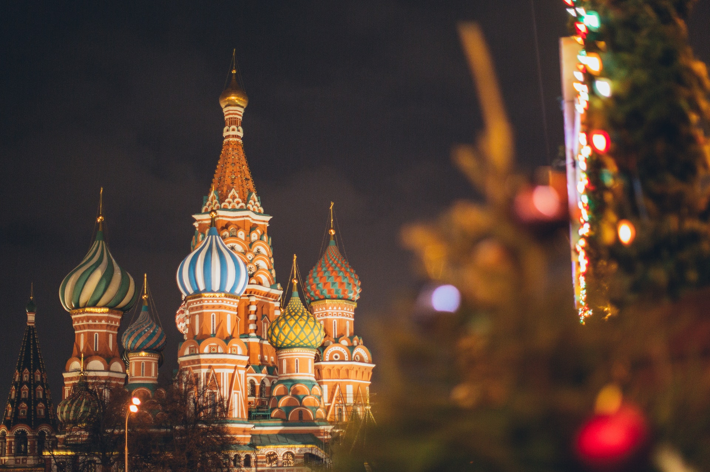

DURATION
6 years
YEARLY FEES
200,000 onwards
FOLLOWS
NMC guidelines
STUDENT RATING
⭐⭐⭐⭐
YEARLY FEE
250,000 INR
ADMISSION CRITERIA
NEET Qualified
INDIAN STUDENTS
20,452
FMGE %
33.96(in 2020)
MEDIUM OF STUDY
English
MBBS DURATION
6 Years
WHY STUDY MBBS IN RUSSIA
Being listed among the largest country in the world, Russia successfully made its presence among the best destinations for medical education. MBBS in Russia is the preferred choice among international students. This country is the home of world-ranked medical universities which are approved by many international organizations.
Over thousands of medicos from all over the world apply in Russia. All the top Medical Universities in Russia are approved by MCI and offers the world’s approved degree to students. Low-cost tuition fees, high-quality medical education, plenty of accommodations, etc. are available for international students.
Russian medical universities have a good infrastructure and provide better facilities to candidates. They have an international community that celebrates all the functions and follows all the traditions. Russia becomes the most trusted and a cost-effective location for students who are preparing to study MBBS in abroad.
Students love to study the medical program at Russian medical universities. This country has so many advantages which makes it the better choice for Indian students to study the MBBS program. Below are some of the major advantages that are very useful for foreign students.
- MBBS Admission
- Tuition Fees
- Top-Ranked Universities
- FMGE Exam
- Medical Degree
Applicants can easily apply for MBBS Admission in Russia for studying the medical program. The complete process is very easy and candidates can understand it easily.
The MBBS Fees in Russia is low which allows students to complete their medical degree in a low budget. Applicants can complete the degree between INR 14/- to 45/- lakh.
Russia is the home of world-ranked universities that offer world-class medical programs to international students.
The FMGE Exam percentage is also good and far better than in other countries. It is compulsory to pass the examination to start clinical practice in India.
The MBBS degree offered by Russian medical universities is approved by the NMC and WHO which means the medical degree is accepted all over the world.
MBBS IN RUSSIA - TOP RANKED UNIVERSITIES


Crimea Federal University
Estd. 1853
Yearly 250,000

Chuvash State Medical University
Estd. 1853
Yearly 250,000

Bashkir State Medical University
Estd. 1853
Yearly 250,000
MBBS IN RUSSIA ELIGIBILITY
- ENTRANCE EXAM
- ACADEMIC QUALIFICATION
- Age
NEET UG Exam
Score at least 50% in 10+2 classes with Physics, Chemistry and Biology.
17 Years is the minimum age that candidates must complete till 31st December of the admission year.
DOCUMENTS REQUIRED
X & XII Marksheets
NEET Scorecard
Passport
Photographs
HIV, COVID Report
Bank Statement
MBBS IN RUSSIA ADMISSION PROCESS 2022-2023
Every year, lots of applicants plan to apply for MBBS in Russia Admission at top universities. This country is the home of over 10,000 international students that came to study in the MBBS program. Follow the below steps and get direct admission to top Russian medical universities without any donation.
- REGISTRATION is the very 1st step to starting the admission process for MBBS admission in Russia. Universities are mostly filled during the “August intake”.
- ADMISSION The next process where candidates need to give all the necessary information asked on the university’s admission portal, along with soft copies of the documents asked.
- ADMISSION LETTER Generated after scrutiny of the student's application. This signifies the acceptance of the student’s application. The MBBS abroad consultant often applies to the letter.
- The next step is the DOCUMENTATIONprocess where candidates require verifying the documents by the relevant authorities. Along with this, it also includes getting the documents in notarized translations into Russian and Apostles stamps.
- After successfully completing the above process, the university generates a LETTER OF INVITATION that is the documented confirmation of a student’s admission to the university.
- Once all the above formalities are done, students can go forward with the VISA formalities. Right from the application to the processing of the visa, the entire process takes a maximum of 10-15 business days. A Student Visa is initially valid for 90 Days and must be renewed every year.
- The TICKETING & DEPARTURE is the final step for the eventual journey. The MBBS abroad consultant generally carries out this process.
COST OF EDUCATION IN RUSSIA
Studying the low-cost MBBS education is the main motto for studying Abroad. MBBS in Russia Fees is quite low as compared to Indian private institutions and developed countries institutions. Below is the estimated cost for studying in Russian University: -
Type of Expense
Tuition fee per year
RUB 300,000
Living & Accomodation
RUB 11,000
Mess & Food
RUB 7000
Visa Fee
RUB 8000
Medical Insurance
RUB 8000
Total Expense
RUB 40,000
STUDY MBBS IN RUSSIA VS MBBS IN INDIA
| MBBS in Russia | MBBS in India |
|---|---|
| MBBS Fees in Russia starts from INR 14/- Lakh that is easily manageable. | MBBS in India Fees starts from INR 50/- Lakh and it will be around INR 1/- Cr which is difficult to manage. |
| Candidates are required to qualify for the NEET Exam to complete the admission process. | Candidates are required to get a high NEET Score to secure a seat at an Indian medical college. |
| The Environment and Culture in Russia is comfortable for living. | Every Indian student is very aware about the Environment and Culture in the country. |
| Government Medical Colleges are available for studying the MBBS program. | Very Few Government Colleges seats are available for students due to high competition and quota. |
| NMC Approved medical colleges are available like India. | Medical colleges in India are approved by the Medical Council of India or NMC. |
PARTNER UNIVERSITIES
WHEN DREAMS COME TRUE
⭐⭐⭐⭐
Rakhi Sharma(Jabalpur)
SAMARA STATE MEDICAL UNIVERSITY
I study in Samara State Medical University. I am a 2nd year Student and have taken admission in this university by Education Vibes. The complete journey right from application to allotment of hospital was smooth and all credit goes to the wonderful team of Education Vibes.
⭐⭐⭐⭐
Rakhi Sharma(Jabalpur)
SAMARA STATE MEDICAL UNIVERSITY
I study in Samara State Medical University. I am a 2nd year Student and have taken admission in this university by Education Vibes. The complete journey right from application to allotment of hospital was smooth and all credit goes to the wonderful team of Education Vibes.
⭐⭐⭐⭐
Rakhi Sharma(Jabalpur)
SAMARA STATE MEDICAL UNIVERSITY
I study in Samara State Medical University. I am a 2nd year Student and have taken admission in this university by Education Vibes. The complete journey right from application to allotment of hospital was smooth and all credit goes to the wonderful team of Education Vibes.
OUR TAKE ON RUSSIA
PROS
- Affordable Tuition Fee
- Low cost of living
- International standard education
- Smooth admission process
- Good ties with India
CONS
- Some universities are expensive
- Cold Climate
EXPLORE OTHER DESTINATIONS

MBBS IN GEORGIA
Explore Now >

MBBS IN BANGLADESH
Explore Now >

MBBS IN KAZAKHSTAN
Explore Now >
ABOUT RUSSIA
Russia Is the largest nation in the world. The Capital of Russia, Moscow has the world's 3rd busiest metro after Tokyo and Seoul. Over 6 million people ride the Moscow Metro daily. Russia has the coldest inhabited town on the earth i.e., Oymyakon which is in the Yakutia region, Siberia. The Trans-Siberian Railway is the world's longest railway that extends from Moscow to Vladivostok, is also present in Russia. Siberia makes up 77% of the Russian Federation and it is a large region in Northern Russia. Only 20% of Russian people live there due to harsh conditions. Russia is also the home world's top-ranked medical university that attracts candidates from all over the world.
CAPITAL
Moscow
CURRENCY
Russian Ruble(RUB)
RELIGIONS
Russian, Christianity, Islam and Others
LANGUAGES SPOKEN
Russian, English, Others
POPULATION
144 Mn
HEAD OF STATE
Vladimir Putin
CUISINE
Pancakes, Smetana, Chicken Kiev, Golubtsy, etc.
MAJOR CITIES
Moscow, St. Petersberg, Kazan, Samara, Ufa
FAQs
Is Russia good for MBBS in Abroad?
Is NEET required for admission at Russian Medical Universities?
What is MBBS in Russia Fees for Indian Students?
Why study MBBS in Russia?
Is an MBBS degree offered by Medical Universities in Russia valid in India?
Is MBBS from Russia safe for females?